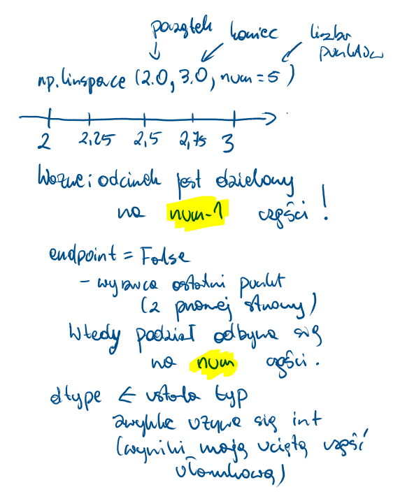
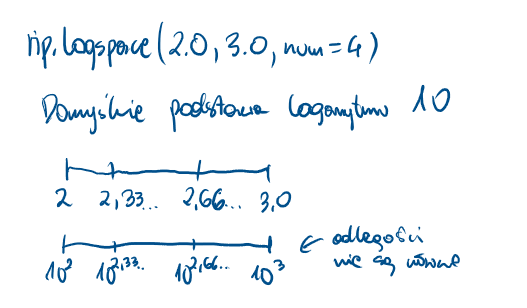

np.array - argumenty rzutowany na tablicę (coś po czym można iterować) - warto sprawdzić rozmiar/kształt
import numpy as np= np.array([2 , - 3 , 4 ])print (tab)print ("size:" , tab.size)= np.array((4 , - 3 , 3 , 2 ))print (tab2)print ("size:" , tab2.size)= np.array({3 , 3 , 2 , 5 , 2 })print (tab3)print ("size:" , tab3.size)= np.array({"pl" : 344 , "en" : 22 })print (tab4)print ("size:" , tab4.size)
[ 2 -3 4]
size: 3
[ 4 -3 3 2]
size: 4
{2, 3, 5}
size: 1
{'pl': 344, 'en': 22}
size: 1
np.zeros - tworzy tablicę wypełnioną zerami
import numpy as np= np.zeros(4 )print (tab)print (tab.shape)= np.zeros([2 , 3 ])print (tab2)print (tab2.shape)= np.zeros([2 , 3 , 4 ])print (tab3)print (tab3.shape)
[0. 0. 0. 0.]
(4,)
[[0. 0. 0.]
[0. 0. 0.]]
(2, 3)
[[[0. 0. 0. 0.]
[0. 0. 0. 0.]
[0. 0. 0. 0.]]
[[0. 0. 0. 0.]
[0. 0. 0. 0.]
[0. 0. 0. 0.]]]
(2, 3, 4)
np.ones - tworzy tablicę wypełnioną jedynkami (to nie odpowiednik macierzy jednostkowej!)
import numpy as np= np.ones(4 )print (tab)print (tab.shape)= np.ones([2 , 3 ])print (tab2)print (tab2.shape)= np.ones([2 , 3 , 4 ])print (tab3)print (tab3.shape)
[1. 1. 1. 1.]
(4,)
[[1. 1. 1.]
[1. 1. 1.]]
(2, 3)
[[[1. 1. 1. 1.]
[1. 1. 1. 1.]
[1. 1. 1. 1.]]
[[1. 1. 1. 1.]
[1. 1. 1. 1.]
[1. 1. 1. 1.]]]
(2, 3, 4)
np.diag - tworzy tablicę odpowiadającą macierzy diagonalnej
import numpy as npprint ("tab0" )= np.diag([3 , 4 , 5 ])print (tab0)print ("tab1" )= np.array([[2 , 3 , 4 ], [3 , - 4 , 5 ], [3 , 4 , - 5 ]])print (tab1)= np.diag(tab1)print ("tab2" )print (tab2)= np.diag(tab1, k= 1 )print ("tab3" )print (tab3)print ("tab4" )= np.diag(tab1, k=- 2 )print (tab4)print ("tab5" )= np.diag(np.diag(tab1))print (tab5)
tab0
[[3 0 0]
[0 4 0]
[0 0 5]]
tab1
[[ 2 3 4]
[ 3 -4 5]
[ 3 4 -5]]
tab2
[ 2 -4 -5]
tab3
[3 5]
tab4
[3]
tab5
[[ 2 0 0]
[ 0 -4 0]
[ 0 0 -5]]
np.arange - tablica wypełniona równomiernymi wartościami
Składnia: numpy.arange([start, ]stop, [step, ]dtype=None)
Zasada działania jest podobna jak w funkcji range, ale dopuszczamy liczby “z ułamkiem”.
import numpy as np= np.arange(3 )print (a)= np.arange(3.0 )print (b)= np.arange(3 , 7 )print (c)= np.arange(3 , 11 , 2 )print (d)= np.arange(0 , 1 , 0.1 )print (e)= np.arange(3 , 11 , 2 , dtype= float )print (f)= np.arange(3 , 10 , 2 )print (g)
[0 1 2]
[0. 1. 2.]
[3 4 5 6]
[3 5 7 9]
[0. 0.1 0.2 0.3 0.4 0.5 0.6 0.7 0.8 0.9]
[3. 5. 7. 9.]
[3 5 7 9]
np.linspace - tablica wypełniona równomiernymi wartościami wg skali liniowej
import numpy as np= np.linspace(2.0 , 3.0 , num= 5 )print (a)= np.linspace(2.0 , 3.0 , num= 5 , endpoint= False )print (b)= np.linspace(10 , 20 , num= 4 )print (c)= np.linspace(10 , 20 , num= 4 , dtype= int )print (d)
[2. 2.25 2.5 2.75 3. ]
[2. 2.2 2.4 2.6 2.8]
[10. 13.33333333 16.66666667 20. ]
[10 13 16 20]

np.logspace - tablica wypełniona wartościami wg skali logarytmicznej
Składnia: numpy.logspace(start, stop, num=50, endpoint=True, base=10.0, dtype=None, axis=0)
import numpy as np= np.logspace(2.0 , 3.0 , num= 4 )print (a)= np.logspace(2.0 , 3.0 , num= 4 , endpoint= False )print (b)= np.logspace(2.0 , 3.0 , num= 4 , base= 2.0 )print (c)
[ 100. 215.443469 464.15888336 1000. ]
[100. 177.827941 316.22776602 562.34132519]
[4. 5.0396842 6.34960421 8. ]

np.empty - pusta (niezaincjowana) tablica - konkretne wartości nie są “gwarantowane”
import numpy as np= np.empty(3 )print (a)= np.empty(3 , dtype= int )print (b)
[0. 1. 2.]
[ 0 4607182418800017408 4611686018427387904]
np.identity - tablica przypominająca macierz jednostkową
np.eye - tablica z jedynkami na przekątnej (pozostałe zera)
import numpy as npprint ("a" )= np.identity(4 )print (a)print ("b" )= np.eye(4 , k= 1 )print (b)print ("c" )= np.eye(4 , k= 2 )print (c)print ("d" )= np.eye(4 , k=- 1 )print (d)
a
[[1. 0. 0. 0.]
[0. 1. 0. 0.]
[0. 0. 1. 0.]
[0. 0. 0. 1.]]
b
[[0. 1. 0. 0.]
[0. 0. 1. 0.]
[0. 0. 0. 1.]
[0. 0. 0. 0.]]
c
[[0. 0. 1. 0.]
[0. 0. 0. 1.]
[0. 0. 0. 0.]
[0. 0. 0. 0.]]
d
[[0. 0. 0. 0.]
[1. 0. 0. 0.]
[0. 1. 0. 0.]
[0. 0. 1. 0.]]
Ćwiczenia: (ex3.py)
Utwórz jednowymiarową tablicę zawierającą liczby całkowite od 1 do 5 i przypisz ją do zmiennej A. Wynikowa tablica powinna mieć postać: \[\begin{bmatrix}1 & 2 & 3 & 4 & 5\end{bmatrix} \]
Utwórz dwuwymiarową tablicę zawierającą elementy: \[\begin{bmatrix}1 & 2 \\ 3 & 4\end{bmatrix} \] B.
Utwórz tablicę zawierającą liczby od 0 do 9 (włącznie). Przypisz ją do zmiennej C.\[\begin{bmatrix}0 & 1 & 2 & 3 & 4 & 5 & 6 & 7 & 8 & 9\end{bmatrix} \]
Utwórz tablicę zawierającą liczby od 10 do 30 z krokiem 5. Przypisz do D.\[\begin{bmatrix}10 & 15 & 20 & 25 & 30\end{bmatrix} \]
Utwórz tablicę 5 wartości równomiernie rozłożonych pomiędzy 0 a 1. Przypisz do E.\[\begin{bmatrix}0. & 0.25 & 0.5 & 0.75 & 1.\end{bmatrix} \]
Utwórz dwuwymiarową tablicę o wymiarach 2x3 wypełnioną zerami. Przypisz do F.\[\begin{bmatrix}0 & 0 & 0 \\ 0 & 0 & 0\end{bmatrix} \]
Korzystając z np.eye utwórz macierz jednostkową 4x4. Przypisz do J.\[\begin{bmatrix}1 & 0 & 0 & 0 \\ 0 & 1 & 0 & 0 \\ 0 & 0 & 1 & 0 \\ 0 & 0 & 0 & 1\end{bmatrix} \]